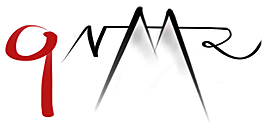
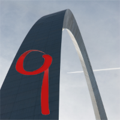
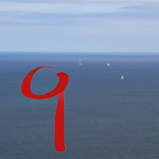

qNMR Summit Conferences
We put the q into NMR
Guido Pauli, gfp@uic.edu
Upcoming qNMR Summit Events
A global qNMR Summit conferernce is planned by our qNMR-J colleagues in Japan. The qNMR Summit 2027 will be hosted in the Shimadzu Innovation Center in Tokyo (Japan) from January 27-29.
The Integrative Global qNMR Expert & Discussion Forum
qNMR Summit events are globally accessible expert and discussion forums on quantitative Nuclear Magnetic Resonance (qNMR) , an analytical methodology of wide utility in chemistry, biochemistry, pharmacy, and biomedicine that continues to grow steadily.
The goal of qNMR Summits is to convene worldwide stakeholders from academia, government, industry, pharmacopoeias, and regulatory agencies and offer a platform for scientific exchange on the latest qNMR developments, applications, and knowledge in the field of qNMR. qNMR Summits are organized collaboratively since 2016 by teams of volunteers.
Timeline & Overview of qNMR Summit Events
The inaugural qNMR Summit took place in Rockville (MD) on October 6+7, 2016. Since then, qNMR Summit events have been hosted worldwide and will be continued to be hosted in various parts of the globe. Flagship events include globally coordinated conferences with participants from all over the world.
The qNMR Summit Symposium 2026 (10.0) was hosted by Spectral Service AG. It convened in Cologne (Germany) on June 25-27, 2026.
The qNMR Summit 2025 (9.0) . was held as an in-person event (no virtual component) on Wednesday (1/2 day), Thursday, and Friday, June 4-6, 2025, in Halifax, NS, Canada, in connection and overlapping with the International Symposium on Biological and Environmental Reference Materials (BERM-16) on June 2-4, 2025. It was hosted by the Metrology Research Centre of the National Research Council (NRC), Canada, and co-organized with support from scientists at UIC and USP.
The qNMR Summit 2024 (8.0) was held as a hybrid event with in-person participation and a virtual component on August 15 and 16, 2024, in Chicagoland at Dominican University, River Forest (IL). It was hosted by Dominican University (DU) and co-organized by scientists from DU, UIC, and USP
The qNMR Summit in 2023 (7.0) was originally scheduled for March 2020, but could not be held due to the global health situation. It was conducted as an in-person conference on March 29-31, 2023, in Santiago de Compostela, Spain.
The qNMR Summit 2021 (6.0) was conducted as a virtual conference on October 5-7, 2021. It was co-organized by scientists from UIC and USP.
The qNMR Summit 2019 (5.0) was held on October 2+3, 2019 at the USP headquarters in Rockville, MD (USA) and was co-organized by scientists from UIC and USP.
The qNMR Summit Symposium 2018 (4.0) was convened at the University of Wuerzburg (Germany).
The qNMR Summit 2018 (3.0) was held on January 29+30 in Tokyo (Japan). It was organized by scientists from Jeol and FUJIFILM-Wako.
The qNMR Summit 2017 (2.0) was held on March 16+17 at the Bundesanstalt für Materialforschung und -prüfung (BAM) in Berlin (Germany). The program covered a variety of technical discussions from academic, industrial, and government speakers, and addressed issues of qNMR validation and setting up of a qNMR Wiki. The chair was Michael Maiwald of BAM.
The inaugural qNMR Summit 2016 (1.0) was held on October 6+7, 2016 at the United States Pharmacopeia (USP) in Rockville, MD (USA). It was organized by Gabriel Giancaspro and Anton Bzhelyansky of USP and Guido Pauli of the Center for Natural Product Technologies (CENAPT) of the UIC.
The first qNMR Symposium 2016 (0.9) was held on in May 2016 at Spectral Service AG and chaired by Bernd Diehl.
qUOTES
The arQue of Chemical Analysis
"The arc of chemical analysis is long, and from what I see, I am sure it bends towards qNMR."
Anton Bzhelyansky (USP), Co-founder, qNMR Summit Conferences

The q Truth
"qNMR data never lies."
J. Brent Friesen, Organizer, qNMR Summit 2024

qNMR Summit Code of Conduct
In alignment with the standards of conduct for academic gatherings, qNMR Summits adhere to the AAAS Code of Conduct.
When offered formats involve in-person/online hybrid sessions, the goal is to encourage international participation, making the summit a truly global event. This strategy reflects a deep commitment to sharing knowledge and fostering collaboration across borders.
By prioritizing live interaction and direct communication, the qNMR Summit is cultivating an environment that values real-time exchange and collaboration, staying true to its spirit of openness and intellectual generosity.
The qNMR Summit has adopted a strict No-Recording Policy , the decision driven by the logistical challenges of managing individual recording permissions and the necessity to protect the speakers' intellectual property.
Instead, the attendees are encouraged to engage in direct dialogue with speakers. This policy underscores the event's ethos of respect for the speakers' time and effort and promotes personal and meaningful interaction between participants and presenters. It is, therefore, ensured that the qNMR Summit remains a platform of innovation and collaboration in the scientific community.